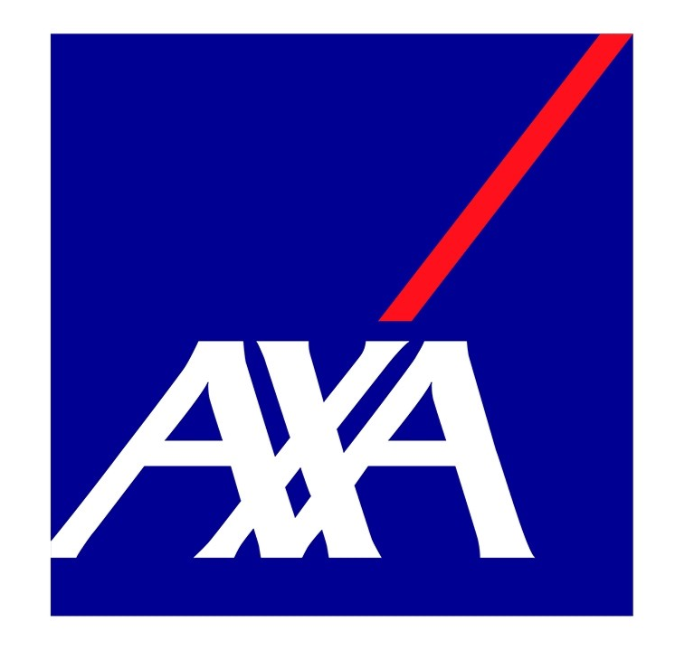
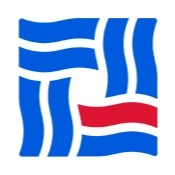

- I am so proud that I reported a bug (issue #11978) to vLLM, and my fix has been merged into the main branch (PR #11979). Now, I am a small contributor to vLLM. 😎
- Migrate vLLM to Ascend NPU platform (vllm-ascend), responsible for unit testing and adaptation of some operators.
- Adapt speculative decoding on vllm-ascend.
🎓 Education
The Chinese University of Hong Kong, Shenzhen
QS World University Rankings 2025: #36
B.B.A. in Finance (School of Management and Economics)
09/2022 - 06/2026
GPA: 3.3/4.0 (83/100)
Ranking: none
Key courses: Calculus(94), Linear Algebra(100), Object Oriented Programs(94), Probability and Statistics(95), Data Structure(97), Pattern Recognition(90), Computer Vision(91), Operations and Optimization(88), Data Mining and Knowledge Processing(94), Mathematical Logic(95), Principles and Techniques of LLMs(95), Principle and Algorithm of AI(93)
🔬 Internship
Monte Carlo Fund
Advisor: Prof. Xianghui Yuan (Xi'an Jiaotong University)
Location: Huawei Lianqiu Lake R&D Center, Shanghai
Department: Ascend Computing Inference Development
12/2024 - 03/2025
 AXA
AI for Recognizing Preference
Advisor: Prof. Huiran Zhang (Shanghai University)
Project undisclosed
04/2024 - 09/2024
- Proposed a novel ERP composite formula for analyzing human preferences.
- Achieved effective classification of preferences using AI methods combined with the developed formula.
- Authored a paper as the first author, which is under review.
 SEALAND SECURITIES
Rule Discovery in Physical Data/Video
Advisor: Prof. Tailin Wu (Westlake University), Prof. Sebastian Musslick (Brown University)
Project undisclosed
07/2023 - 06/2024
- Developed a transformer-based model and programmed to experiment with symbolic regression tasks.
- Modeled and transferred symbolic regression tasks to the domain of videos.
- Explored the discovery of physical system patterns from videos to empower scientific discovery tasks.
🌟 Scholarships & Honors
- Harmonia Inspirational Scholarship2022-2025
- Harmonia Bowen II Scholarship 2022-2025
- Excellent Student Helper Sponsored by China Merchants Bank 12/2024
🏆 Awards
- ICPC (International Collegiate Programming Contest) Asia Regional Contest (Hefei) Bronze Medal 🥉 11/2023
🏫 International Summer Program
- CUHK International Summer School 2024 6/2024-8/2024
💻 Competition Experience (Selected by Time)
- Proposed and implemented a method to quickly align pre-trained models from different modalities.
- Designed a twin neural network similarity module to align pretrained models with varying embedding dimensions.
- Achieved rapid model alignment between text and image modalities with minimal training on a standard image classification dataset, rather than requiring a large "image-description" dataset typical for models like CLIP.
- Experimentally demonstrated the project's ability to align quickly with minimal GPU requirements and satisfactory performance.
- Reproduced and experimented with the TextCNN model.
- Performed tokenization and encoding of sentence content, followed by padding or truncating sentence lengths.
- Implemented word embedding and utilized multiple convolutional kernels of varying sizes for feature extraction, pooling, and final classification through fully connected layers.
- Developed a network model based on CNN for video frame feature extraction and LSTM for sequential frame feature computation.
- Compared the classification performance of KNN and ANN after freezing the feature extraction model parameters.
- Achieved 92% accuracy on a public dataset, comparable to results from another study using a non-public dataset.
- Independently designed and coded a system utilizing VGG16 for signature feature extraction.
- Achieved 100% accuracy on the CEDAR dataset using Siamese neural networks for classification.
- Developed frontend-backend interaction programs enabling the utilization of training results on web platforms.
🛠️ Certificates & Skills
- Certificates: CFA level 1, CET-6, CET-4
- Programming languages: Python (Familiar), R (Familiar), SQLite (Familiar), Stata (Familiar)
- Tools: Word/PowerPoint/Excel(Familiar), WRDS, Choice, Matlab, LATEX, Markdown, VSCode
🤝 Extracurricular & Volunteer Activities
Harmonia College: Ancient Glass Art on the Silk Road
Advisor: Prof. Bohan Li (CUHK-SZ)
Location: Shenzhen Museum, Shenzhen
04/03/2023
- Went with Professor Bohan Li from the School of Humanities and Social Sciences to visit the Ancient Glass Art Exhibition on the Silk Road at the History and Folklore Museum of Shenzhen Museum.
- Organized discussions and shared experiences of the exhibition.